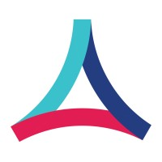
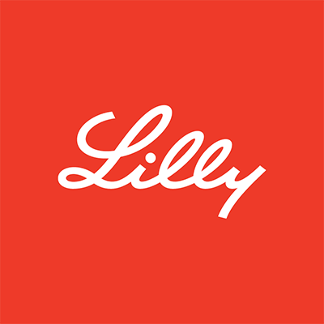

Research Theme: Building expert-centered interpretable methods and platforms to enable more effective decision-making in biomedical and clinical settings.
Research Interests: Temporal and multi-omics integration, rare disease research, interpretable statistical & Bayesian models, large language models, time-series models, human-in-the-loop computation, gene regulatory networks, visualization and perturbation, reproducibility, HPC, game theory, protein binding prediction.
AI & Technology Industry Research 7 positions
Senior Researcher — Health Futures, Microsoft Research, Cambridge MA
Building novel methods and pipelines to improve rare disease solve and diagnostic rates in partnership with the Broad Institute of MIT and Harvard, and the Centre for Population Genomics, Australia.
Learn more ↗
Computational Biologist, Data Infrastructure & ML — Phenome Health / Deloitte, San Francisco CA
Developed scientific and business strategy for healthcare and life science start-up under Dr. Leroy Hood.

Researcher and Creator — Google Cloud, Palo Alto CA
Developed new computational biology frameworks in collaboration with biotech companies and Google Cloud.
Research Intern — Biomedical Computing, Health Futures, Microsoft Research, Redmond WA
Developed three interpretable Bayesian inference models leveraging temporal and multi-omic data to uncover dysregulation in breast cancer, ALS, and Parkinson's disease.

Bioinformatics Researcher — MIT Lincoln Laboratory, MA
Developed a fast protein analysis algorithm using Dynamic Distributed Dimensional Data Model (Dr. Jeremy Kepner), merging sparse algebra, associative and distributed arrays, and triplestore/NoSQL databases (Accumulo).
Arduino Workshop Creator — Google Computer Science Summer Institute (CSSI), Cambridge MA
Created, recruited, implemented, and led Arduino workshop for 40+ students at Google's Summer Institute.
GitHub ↗Technology Sales and Marketing Associate — JDS Uniphase, TX / NY
Researched, tested, taught, and marketed communication software, services, and solutions for Verizon and AT&T.
Academic Research 10 positions

Post-doctoral Researcher — Biostatistics, Brown University, Providence RI
Developed interpretable Bayesian machine learning and statistical models from multi-omics data. Advisor: Dr. Lorin Crawford.
Ph.D. Researcher — CCMB, Brown University, Providence RI
Developed interpretable Bayesian ML models for longitudinal multi-omic studies and platforms to understand gene regulation. Advisors: Dr. Lorin Crawford, Dr. Erica Larschan, Dr. Charles Lawrence.
Machine Learning Scholar — Rhode Island Department of Health
Designed predictive model to address a need in Rhode Island's hospital systems. Findings aimed to inform state legislation.
Graduate Student — Computer Science, Princeton University & Brown University
Designed deep learning model to improve DNA single-cell sequencing data for copy-number inference. Developed pipeline to identify subclonal driver mutations in bulk sequencing tumor samples across nine cancer types.

Game Theory Researcher (Fulbright Scholar) — Département d'Informatique, ULB, Belgium
Created a method to uncover binding specificities in SH3 protein domains using machine learning, cooperative game theory, and structural bioinformatics.
Visiting Scholar — Département d'Informatique, ULB, Belgium
Analyzed the role of core amino acids in a FYN SH3 protein domain using structural bioinformatics and game theory techniques.
Bioinformatics Researcher & Tutor — DePauw University, Dr. Chester Fornari, IN
Devised labs & tutored Bioinformatics and Cells & Genes. Integrated MEGA and Chimera to analyze TP53.
Behavioral Ecology Researcher — Science Research Fellowship, DePauw University, IN
Developed procedures to test and analyze calling patterns of Acris blanchardi. Tested parachuting behavior across three frog species.
Inorganic Chemistry Researcher — Science Research Fellowship, DePauw University, IN
Synthesized ionogel and determined chemical and physical properties for use as a catalyst for biosensing, optics, and electrolytes.
Chemical Inventory Database Creator — Senior Project, DePauw University, IN
Designed, built, and deployed database (Parse Platform) and front end (HTML, CSS) used by ~2,000 users across many departments.
Learn more ↗Pharmaceutical Research 3 positions

Quality Control Researcher — Eli Lilly and Company (Elanco), IN
Designed, tested, and implemented two software programs for deviation documentation and instrument control. The deviation documentation program went GLOBAL for Elanco plants in Nov. 2012. Worked with GC, AA Spectroscopy, and HPLC.
Visiting Scholar — Center for Structural Biology, Vanderbilt University, TN
Assisted in development of new structure prediction algorithms in RosettaLigand and proposed new ML techniques in Biochemical Library (BCL) drug discovery project.
Inorganic Chemistry Researcher — Eli Lilly and Company, IN
Assessed hydrolytic stability of cyclopropanecarboxylic acid esters as potential prodrugs. Synthesized an acyclovir prodrug and evaluated a ghrelin O-acyltransferase inhibitor as a therapeutic target for obesity and diabetes.
Post-doctoral Researcher
Biostatistics Department, Brown University, Providence RI · 2022
Statistical (mostly Bayesian) methods for multi-omics studies to uncover gene regulation. Advisor: Dr. Lorin Crawford.
Ph.D., Computer Science (Computational Biology)
Center for Computational and Molecular Biology (CCMB), Brown University, Providence RI · 2022
Thesis: "It's about time: developing interpretable models to uncover regulatory mechanisms from temporal and multi-omics data." Advisors: Dr. Lorin Crawford, Dr. Erica Larschan, Dr. Charles Lawrence.
M.S., Computer Science
Brown University & Princeton University, RI / NJ · 2019
Cancer genomics concentration. Built DNA single-cell copy-number inference method and tool to find subclonal mutations in bulk tumors. Advisor: Dr. B. Raphael. Thesis ↗

B.A., Computer Science, magna cum laude
DePauw University, Greencastle IN · 2014
Biochemistry specialization, minor French. GPA 3.7. ITAP and SRF selective honors programs. Honors: Mortar Board, Chi Alpha Sigma, Phi Eta Sigma, Order of Omega, NSCS, Alpha Lambda Delta.
Skills & Expertise
Programming Languages
Dev Tools & Environments
Big Data & HPC
Languages
Honors & Awards
International & National
- 2014–2019 NSF Graduate Research Fellowship (NSF GRFP)
- 2014–2015 Fulbright Research Scholar, Belgium
- 2015 Belgian American Education Foundation Fellow
- 2014 SMART Fellowship (declined — NSF GRFP)
- 2013 Grace Hopper Poster Award; NSF (2010), Xerox (2012), Intel (2013) scholarships
- 2011 Ohio Celebration of Women in Computing scholarship
- 2010 Science National Honor Society; NSCS
- 2009 Indiana HSAA Role Model
DePauw University
- 2014 Old Gold Award: academic excellence and high achievement
- 2012 Internships in Francophone Europe fellowship
- 2010–2014 Dean's List (every semester)
- ITAP and SRF — selective honors programs
- Mortar Board, Chi Alpha Sigma, Phi Eta Sigma, Order of Omega, NSCS, Alpha Lambda Delta
Relevant Coursework
CS/Math: Bayesian Inference in Genomics & Molecular Biology, Advanced Probabilistic Methods, Computational Molecular Biology, Advanced Algorithms in Computational Biology, Coalescent Theory, Statistical Inference, Bioinformatics
Biochemistry/Biology: Genetics, Function & Structure of Biomolecules, Ecology & Evolution, Cells & Genes, Enzyme Mechanisms
Lab skills: NMR, Mass Spectroscopy, IR Spectroscopy, Chromatography, PCR, Gel Electrophoresis, GC, HPLC, AA Spectrometry